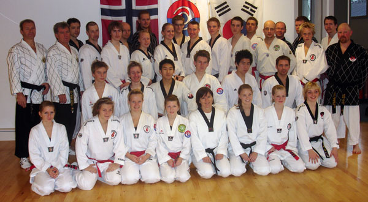

Innlegg
Fin Yudanjasamling på Hamar

Vi var to stykker som dro gjennom Ringerike TKD. Instruktør-masterne var M. Jan terje Sletten, M. Svein Anderstuen og Hamars egen master M. Are Simensen.
Anders og Artjom tok turen til Hamar fredag kveld. Det foregikk da en trening fra 1800 til 2100 som tok for seg litt selvforsvar, bryting og litt uten om det helt vanlige. Folk fikk brukt litt av de musklene de ikke var så vant til å bruke. Praktiske opplysninger ble også gitt, som de gjerne pleier å bli etter første trening. Folk fant seg litt til rette, traff igjen kjente og noen gikk ut for å spise.
Hallen vi trente heter ”Espern” og det var et topp-moderne treningsanlegg med danse-haller, kampsport-haller, klatrevegger og treningsutsyr. Det var et ombygd tog-lager, og ombygningen skjedde for tre år siden, så alt var ganske nytt og i beste kvalitet. Det var til og med barnehage der man kunne putte barna mens man trente. Lørdag var en dag for mange treninger. Første trening var felles for alle sammen, den ble holdt av M. Anderstuen og M. Sletten. Det var en ganske slitsom oppvarmingsøkt før det gikk over i grunnteknikk på alle de fleste nivåer. En trening som krevde en god slant selvdisiplin og konsentrasjon. Gjengen ble så delt opp i Dan-gradert og cup-graderte for å trene på hvert sitt sted. Sletten og Anderstuen kjørte hver sin trening og byttet på hver gang. Fokus var mye på Poomse, grunnteknikk og Machoe kyoregi (avtalt kamp) og vi fikk svar på alt vi lurte på. Vi fikk også gått gjennom 2-mot-1-teknikkene. Om kvelden dro det en god gjeng ut for å spise. Ganske mange kom på lørdagen. På søndag ble det mye forvirring på grunn av flytting av klokka, og det var nok av folk som både kom alt for tidlig og også en god time for sent. Alle tok selvfølgelig med et smil og masterne var litt fleksible. Det var egentlig meningen og ha en miditajsonsøkt om morgenen men det ble heller en rolig økt og mediatsjonen ble tatt den siste trening i stedet med M. Anderstuen. Treningen som var mellom disse to var en poomse-trening med master Are. Alt i alt har dette vært en vellykket helg med bra treninger, og Hamar TKD fortalte at de skulle gjøre dette årlig. Masterne som instruerte fikk en bukett med blomster hver, helt til slutt.